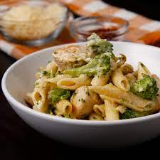

Chicken and Broccoli Alfredo

Description
Easy and delicious pasta recipe for broccoli lovers
Original recipe from Tasty.co
Ingredients
- Penne pasta
- Broccoli
- Chicken breasts
- Heavy cream
- Parmesan cheese
- Garlic
- Olive oil
- Butter
- Spices (salt, black pepper, nutmeg, red pepper flake)
Steps
- Cook pasta in salted water for 8 minutes
- Add broccoli to pasta and simmer for 4 minutes with the lid on
- Strain the pasta and broccoli in a colander
- Heat the olive oil in the pot over medium-high heat, and add the chicken. Season the chicken with season salt and pepper
- Once the chicken is cooked through, remove it from the pot and set aside.
- Add the butter to the pot, and melt it. Once butter is fully melted, add in garlic and stir continuously for 10 seconds
- Add the heavy cream, salt, pepper, and nutmeg. Stir often, and cook until sauce starts to bubble slightly
- Add in Parmesan cheese and stir until the sauce thickens
- Add in the cooked chicken, pasta, and broccoli, and stir until fully combined.
- Top with Parmesan cheese or red chili flakes